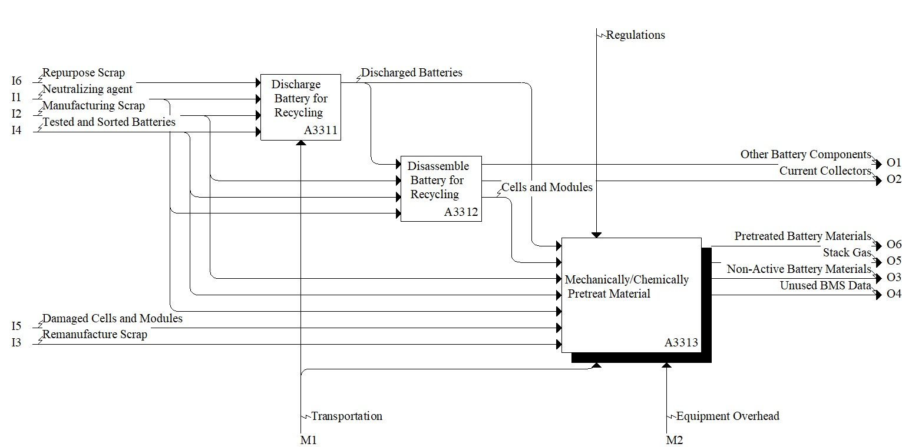

Model: Pretreat Battery

Description
Notes:Definitions:
Pretreat - occurs before hydro-, pyro-, or other chemical seperation and purification activities. This step can include additional disassembly activities, electrolyte removal, shredding, sieving, heating, milling, washing, etc... May include additional sorting and separation steps.
Standards:
UL 1974, Evaluation for Repurposing or Remanufacturing Batteries
References:
Amalia D, Singh P, Zhang W, Nikoloski AN (2025) A review of pretreatment methods for spent lithium-ion batteries to produce black mass-comparison of processes of Asia Pacific recyclers. Mineral processing and extractive metallurgy review, 46(5), 626-643. https://doi.org/10.1080/08827508.2024.2367420
Diekmann J, Hanisch C, Froböse L, Schälicke G, Loellhoeffel T, Fölster AS, Kwade A (2016) Ecological Recycling of Lithium-Ion Batteries from Electric Vehicles with Focus on Mechanical Processes. Journal of The Electrochemical Society, 164(1), A6184. https://doi.org/10.1149/2.0271701jes
Marshall J, Gastol D, Sommerville R, Middleton B, Goodship V, Kendrick E (2020) Disassembly of Li ion cells—characterization and safety considerations of a recycling scheme. Metals, 10(6), 773. https://doi.org/10.3390/met10060773
Mousa E, Hu X, Ånnhagen L, Ye G, Cornelio A, Fahimi A, Bontempi E, Frontera P, Badenhorst C, Santos AC, Moreira K, Guedes A, Valentim B (2022) Characterization and thermal treatment of the black mass from spent lithium-ion batteries. Sustainability, 15(1), 15. https://doi.org/10.3390/su15010015
Pinegar H, Smith YR (2019) End-of-life lithium-ion battery component mechanical liberation and separation. JOM, 71(12), 4447-4456. https://doi.org/10.1007/s11837-019-03828-7
Pinegar H, Smith YR (2020) Mechanical Beneficiation of End-of-Life Lithium-Ion Battery Components. In Energy Technology 2020: Recycling, Carbon Dioxide Management, and Other Technologies (pp. 259-267). Cham: Springer International Publishing. https://doi.org/10.1007/978-3-030-36830-2_25
Rinne T, Klemettinen A, Klemettinen L, Ruismäki R, O’Brien H, Jokilaakso A, Serna-Guerrero R (2021) Recovering value from end-of-life batteries by integrating froth flotation and pyrometallurgical copper-slag cleaning. Metals, 12(1), 15. https://doi.org/10.3390/met12010015
Wilke C, Werner DM, Kaas A, Peuker UA (2023) Influence of the crusher settings and a thermal pre-treatment on the properties of the fine fraction (black mass) from mechanical lithium-ion battery recycling. Batteries, 9(10), 514. https://doi.org/10.3390/batteries9100514
Parent Activity: Pretreat Battery
Activities
Concepts
Disclaimer: Certain commercial equipment, instruments, or materials are identified in this documentation to foster understanding. Such identification does not imply recommendation or endorsement by the National Institute of Standards and Technology, nor does it imply that the materials or equipment identified are necessarily the best available for the purpose.